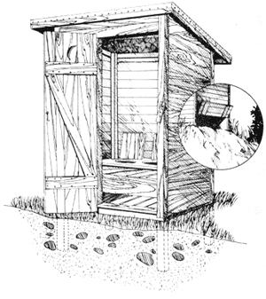
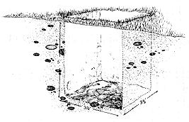
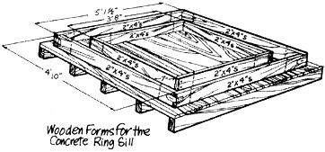
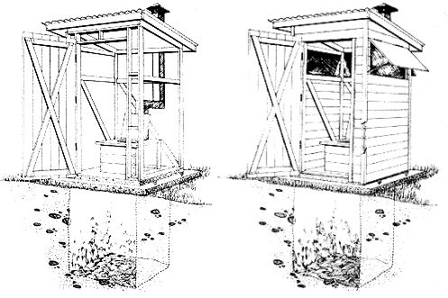
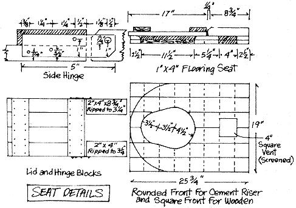
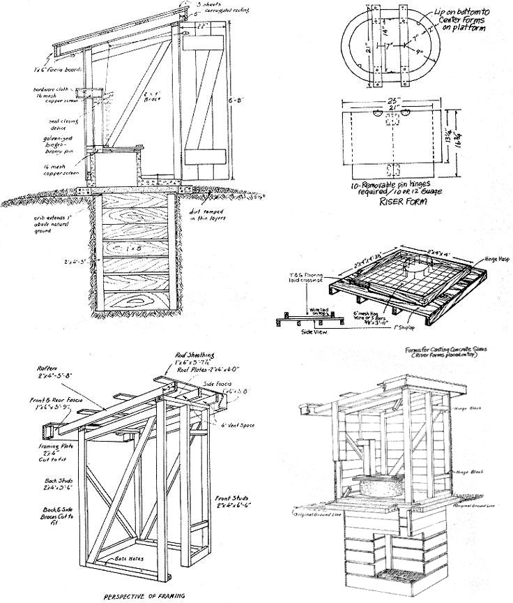

Privies, Old & New
A properly managed privy is at least as healthful for people and land as a septic system and is far more than a place to evacuate waste.
By Elizabeth Allyn
March/April 1972
One of the very first and most important buildings needed on a remote homestead is a privy . . . which isn't as comlicated to construct and maintain as you might have imagined. Both the surface privy and the pit outhouse (see illustrations in the Image Gallery) are simple, straightforward and easy to understand. As long as you follow the general rules, you can hardly go wrong modifying either type to suit your own particular materials, skill or location .
A properly managed privy is at least as healthful for people and land as a septic system and is far more than a place to evacuate waste. Ours is a sanctuary in which to be quiet with no one to ask why you aren't busy . . . to think or read with no one waiting to get in to shave . . . to watch a small, pretty piece of the day pass outside (one of the clapboards on our outhouse has a crack that's perfect for viewing through, like Arctic sunglasses). It's a place where body and self are at peace with the rest of the natural world.
Old homestead backhouses were typically screened by a spreading lilac and "going out to smell the lilacs" has long been a useful euphemism in our family. Our antique accommodation was also christened "The Reading Room" by my father for its quantity of old catalogs and magazines and it is next to impossible-while selecting a page of the right texture - not to get interested in an article from an old OHIO FARMER or SATURDAY REVIEW.
To make a page useful beyond (its own printed) words, we always crush and roll it in our hands. That softens the paper and distributes pressure. Even slick, colored pages can be made fairly efficient and safe this way. Newspapers are better aged until the ink is thoroughly dry and old telephone books are splendid. For that matter, no one will disqualify you for using commercial toilet paper in an outhouse. It doesn't provide much in the way of reading matter but it is comfortable and does disintegrate rapidly.
I suppose open-pit privies are necessary for the great numbers of people who visit parks and other remote locations but I find such designs disagreeable. Our old Reading Room located on a gentle hillside of sandy loam and is kept healthy by earth, air, bacteria and regular doses of ashes or lime.
Wood ashes are best and, if every use of an outhouse is topped by a cupful of them, the building will always have sweet earth smell with never an odor. Coal and trash ashes are almost as good. Superfine agricultural quicklime does a fair job too . . . if you don't mind the strong smell of lime hover around.
The advantage of the Reading Room's slope setting become apparent at cleaning time (about once every two months for family of two). There is an eighteen-inch space between the ground and the first board on the back of the building . . . from which we rake the accumulated waste with a strong, old garb rake saved especially for the job. A few inches of each peak (we try to give our "three holer" balanced use) comes off in a mass - that's the least pleasant part of the operation-and rest is just gardening. Under the peaks, the material is as mellow as good garden soil (when covered with wood ashes), very grainy (coal ashes) or a bit lumpish (lime).
We rake the privy's contents down the slope, cover the peaks with the rest and sprinkle it all again with ashes and earth. About once a year we load the plateau of compost on the spreader and take it out to the fields or haul it by cart to the garden where it's used as top dressing. It's only work... the material smells like sweet earth.
First, dig an excavation that measures 3 1/2' x 3 1/2' and is five feet deep. This hole may later be cribbed in as shown in the Image Gallery, but the cribbing is not absolutely essential.
Second, build a wooden form in which you can pour a concrete ring sill that is four inches thick with outside dimensions of 4'10" X 4'10" and that has a hole in its center measuring 3'8" X 3'8". Pour the ring sill and center and level it over the excavation.
Next, build another form in which a slab of concrete four feet square and 2 1/2 to 3" thick may be poured. If this slab is poured flat (as shown on this double-page spread), a wooden riser box with cover will have to be constructed and mounted on the slab later. The riser may also be made of concrete and poured as part of the stab as shown on page:
All concrete, of course, should be suitably reinforced with steel rod with eye and anchor bolts imbedded in the sill and slab as needed.
Cover the privy with sound siding and paint it inside and out. Corrugated metal roofing may be used on top of the outhouse as shown here and on page 46, or the structure may be topped with roll roofing as shown on page 43.
You may prefer to build in adjustable ventilation such as the screens-with-covers illustrated below, leave an unadjustable 4" vent space across the front and back of the privy as shown in the Image Gallery . . . or, in the case of the less fragrant (with the regular addition of wood ashes) surface privy, cut only a small, traditional, new moon or star in the door. It's six of one and half a dozen of the other, depending on the climate of your region. Remember that less vents also mean less light inside the building. Screens-with-covers are the best all-round approach.
The outbuilding should be framed in with 2 X 4's (See illustrations in the Image Gallery) and a vent built for the pit. This vent may extend above the roof line as shown on this page, or merely run out the back of the house.
The illustration in the Image Gallery shows a suggested seat and lid for either the wooden or concrete riser.
NOTE: This set of instructions is purposely being kept a little loose because there is no "one best" way to build a privy as long as you strictly follow the general rules.
GENERAL RULES PRIVY BUILDING
(1) A privy should always be located so that it will not pollute any domestic water supply. Generally this means that the outhouse should always be on the downgrade side of the water supply and at least 100 feet from it.
(2) The outbuilding should be of adequate capacity, well designed, substantially built and easy to maintain in a sanitary condition.
(3) The best privies are fly-tight and constructed to remain that way. Flies and mosquitoes which breed on human waste can carry typhoid fever, dysentery and other bad news. Pit Privy (the kind illustrated on this page and pages 45-46 mosquitoes can be controlled by pouring a cup of kerosene into the cavity every ten days or so.
(4) Both the excavation and building of pit-type outhouse must be properly vented to prevent odors. Surface privy (the design described on page 43) odors can be controlled quite effectively by sprinkling a cup of wood ashes over every fresh stool.
(5) Make a lid for each outbuilding "seat" and keep the lids in place at all times the privy is not in use,
(0) Never dump garbage or other waste into a privy.
(7) Surface privies must be raked clean at regular intervals and the waste properly disposed of (See illustration in Image Gallery)When the hole under a concrete slab pit privy is filled to within 18 inches of the surface, the house should be moved over a new hole and th old excavation filled with clean dirt.
The drawings on this page are taken from the (now out of print) Texas Community Sanitation Handbook, published by the Texas State Department of Health.
|
 First, dig an excavation that measures 3 1/2 feet x 3 1/2 feet and is five feet deep. This hole may later be cribbed in , but the cribbing is not absolutely essential. |
 Second, build a wooden form in which you can pour a concrete ring sill that is four inches thick with outside dimensions of 4'10" X 4'10" and that has a hole in its center measuring 3'8" X 3'8". Pour the ring sill and center and level it over the excavation. Next, build another form in which a slab of concrete four feet square and 2 1/2 to 3" thick may be poured. If this slab is poured flat (as shown on this double-page spread), a wooden riser box with cover will have to be constructed and mounted on the slab later. The riser may also be made of concrete and poured as part of the stab as shown on page: All concrete, of course, should be suitably reinforced with steel rod with eye and anchor bolts imbedded in the sill and slab as needed. |
 Second, build a wooden form in which you can pour a concrete ring sill that is four inches thick with outside dimensions of 4'10" X 4'10" and that has a hole in its center measuring 3'8" X 3'8". Pour the ring sill and center and level it over the excavation. Next, build another form in which a slab of concrete four feet square and 2 1/2 to 3" thick may be poured. If this slab is poured flat (as shown on this double-page spread), a wooden riser box with cover will have to be constructed and mounted on the slab later. The riser may also be made of concrete and poured as part of the stab as shown on page: All concrete, of course, should be suitably reinforced with steel rod with eye and anchor bolts imbedded in the sill and slab as needed. |
 The outbuilding should be framed in with 2 X 4's (See framing illustrations in the Image Gallery) and a vent built for the pit. This vent may extend above the roof line as shown on this page, or merely run out the back of the house. |
 This illustration below a suggested seat and lid for either the wooden or concrete riser. |
 Click here and here for a downloadable enlargement of this illustration. |
|
 |
|
|